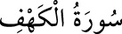

<a name=4598></a><br/>
<i><b>18-</b></i><b>KEHF SÛRESİ</b><br/>
<i><b>Kehf sûresi 110 âyettir. Mekke’de nâzil olmuştur. Ancak 28. âyetin Medine’de</b></i><br/>
<i><b>nâzil olduğu rivâyeti de vardır. Sûre bu adı, içinde söz konusu edilen ve “mağara<br/>arkadaşları” demek olan “Ashâb-ı Kehf”den almıştır.</b></i><br/>
